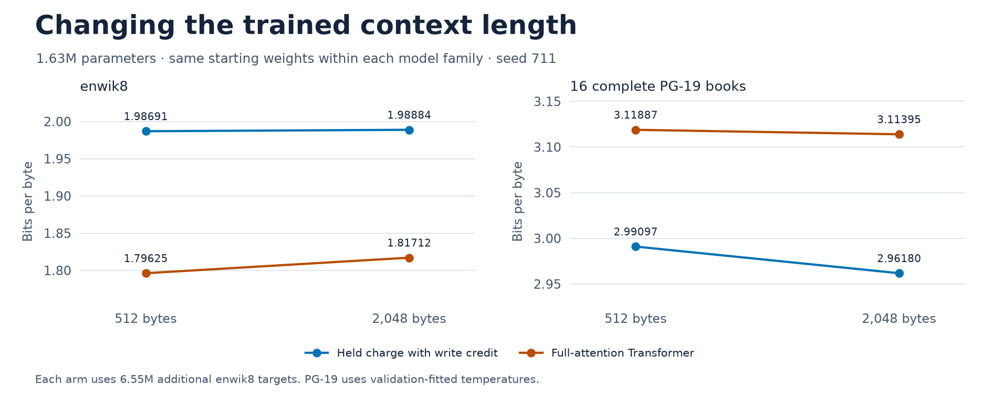
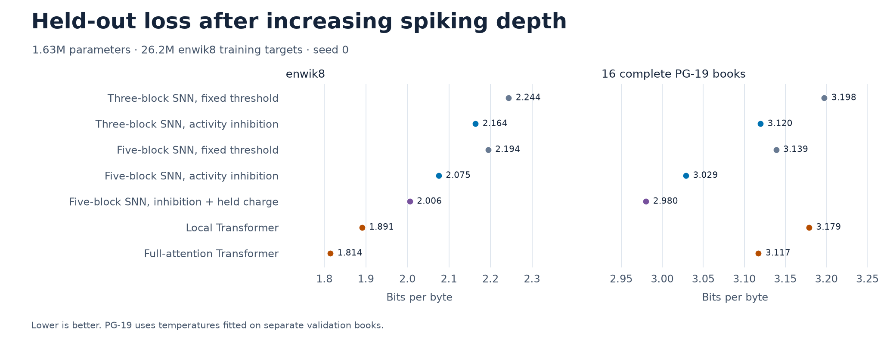
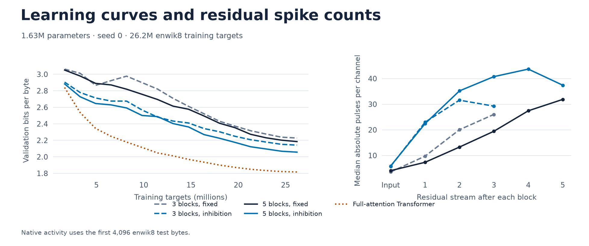
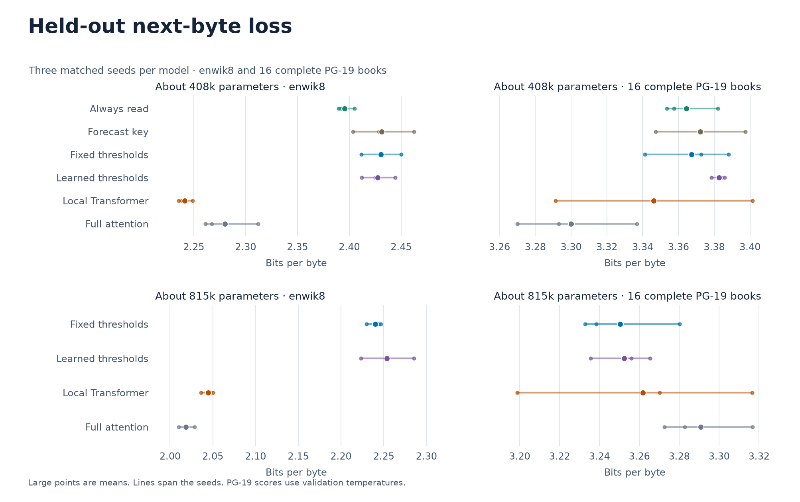

ShuntFormer
A spike-driven transformer that uses lateral and shunting inhibition for attention. The Dendrite follow-up tests address memory for variable-distance recall and a spike readout for next-byte prediction.
Benchmark scope Next-byte prediction uses held-out real text from enwik8 and PG-19. Associative recall uses generated sequences. PyTorch runs the models on CPUs and Apple GPUs (Metal/MPS), including the simulation of spike dynamics. Energy estimates come from operation counts and assumed costs.
Spiking byte language models
The continuation studies compare integer spike decoders with matched Transformer references at 512 and 2,048 training bytes per window. All models trained on enwik8. The tables score the full enwik8 test split and 16 complete PG-19 books in bits per byte. PG-19 temperatures are fitted on separate books. State is persistent tensor storage per stream, including FP32 keys and values for the full-attention reference at its evaluation context.
512-byte continuations · 32,768,000 training targets · seed 711
| Decoder | Parameters | State | enwik8 | PG-19 |
|---|---|---|---|---|
| Held-charge control | 1,630,992 | 21,320 B | 1.98564 | 2.98490 |
| Opponent steering | 1,631,917 | 21,320 B | 1.98533 | 2.97309 |
| Chronological write credit | 1,630,992 | 21,320 B | 1.98691 | 2.99097 |
| Trace read veto | 1,631,012 | 21,320 B | 1.98405 | 2.98763 |
| Spread coincidence | 1,631,012 | 21,320 B | 1.98644 | 2.98129 |
| Full-attention Transformer | 1,630,848 | 3,145,728 B | 1.79625 | 3.11887 |
2,048-byte continuations · 32,768,000 training targets · seed 711
| Decoder | Parameters | State | enwik8 | PG-19 |
|---|---|---|---|---|
| Held charge with write credit | 1,630,992 | 21,320 B | 1.98884 | 2.96180 |
| Full-attention Transformer | 1,630,848 | 12,582,912 B | 1.81712 | 3.11395 |
3.26M parameter comparison · 26,214,400 training targets · seed 0
| Decoder | Parameters | State | enwik8 | PG-19 |
|---|---|---|---|---|
| Seven-block held charge | 3,257,088 | 31,692 B | 1.99402 | 2.89822 |
| Full-attention Transformer | 3,256,832 | 4,194,304 B | 1.86093 | 3.05929 |
Depth and activity inhibition · 26,214,400 training targets · seed 0
| Decoder | Parameters | State | enwik8 | PG-19 |
|---|---|---|---|---|
| Three-block SNN, fixed threshold | 1,630,464 | 14,556 B | 2.24386 | 3.19752 |
| Three-block SNN, activity inhibition | 1,630,464 | 14,556 B | 2.16389 | 3.11971 |
| Five-block SNN, fixed threshold | 1,630,992 | 17,620 B | 2.19441 | 3.13879 |
| Five-block SNN, activity inhibition | 1,630,992 | 17,620 B | 2.07523 | 3.02885 |
| Five-block SNN, inhibition + held charge | 1,630,992 | 21,320 B | 2.00577 | 2.98022 |
| Local Transformer | 1,630,848 | 64,512 B | 1.89056 | 3.17881 |
| Full-attention Transformer | 1,630,848 | 3,145,728 B | 1.81449 | 3.11725 |
Small context-tag comparison · 6,553,600 training targets per seed · three-seed mean
| Decoder | Parameters | State | enwik8 | PG-19 |
|---|---|---|---|---|
| Always-read spiking bank | 407,616 | 32,696 B | 2.39550 | 3.36437 |
| Forecast-keyed spiking bank | 407,616 | 32,696 B | 2.43130 | 3.37224 |
| Context tags, fixed thresholds | 407,616 | 32,696 B | 2.43025 | 3.36729 |
| Context tags, learned thresholds | 407,628 | 32,696 B | 2.42716 | 3.38277 |
| Local Transformer | 407,808 | 31,488 B | 2.24107 | 3.34604 |
| Full-attention Transformer | 407,808 | 1,179,648 B | 2.28026 | 3.29995 |
Large context-tag comparison · 13,107,200 training targets per seed · three-seed mean
| Decoder | Parameters | State | enwik8 | PG-19 |
|---|---|---|---|---|
| Context tags, fixed thresholds | 815,232 | 32,696 B | 2.24015 | 3.25043 |
| Context tags, learned thresholds | 815,244 | 32,696 B | 2.25351 | 3.25233 |
| Local Transformer | 815,232 | 32,768 B | 2.04457 | 3.26187 |
| Full-attention Transformer | 815,232 | 1,572,864 B | 2.01841 | 3.29072 |











Dendrite benchmark update
On a controlled task with one pending binding at a time, Dendrite averaged 99.95% accuracy with 128 intervening distractors after training with up to 4. The matched RoPE Transformer averaged 6.14% over the same 3 seeds. A separate single-seed probe held value and query positions fixed and answered 512 of 512 queries correctly at a gap of 2,048.

The successor model uses a conventional local Transformer backbone with an exact byte-suffix cache and a learned spike readout. The continuous evaluation compares that backbone alone, the same checkpoint with a calibrated readout, and a successor model trained from scratch at the local control’s byte budget. Each language model comparison uses one seed. Scores are bits per byte, with lower values indicating better next-byte predictions. The separate Temporal Spiking LM evaluates a spiking hidden backbone.
| Test stream | Target bytes | Local control | Calibrated readout | Successor, from scratch |
|---|---|---|---|---|
| enwik8 test | 4,999,999 | 2.457 | 2.074 | 2.025 |
| 8 PG-19 excerpts | 1,048,568 | 3.416 | 3.052 | 2.965 |

The language models have about 0.36 million parameters. The PG-19 comparison uses excerpts from eight books without fitting on those books. See the benchmark report for protocols, result files, and reproduction commands.
Results in the original benchmark suite
ShuntFormer-4 led the reimplemented spike-driven attention controls in this suite. It reached 99.0% accuracy on synthetic associative recall, against at most 18.4% for the compared prior mechanisms. Its enwik8 validation loss was 3.28 bits per byte, against 3.41 for Spikformer SSA and 3.50 for WTA. It reached 73.4% on CIFAR-10, against 67.2% for Spikformer SSA and 66.2% for SDSA. The conventional ANN control reached 2.65 bits per byte and 78.9%.
The original ShuntFormer experiments used a four-core CPU and small-scale datasets. Their comparisons matched neurons, parameter count, data, and training steps while varying the attention or MLP.
Published spiking-transformer reference points
Numbers verified against the papers by a literature survey. Several headline results need a caveat before they can serve as a target.
| model | venue | ImageNet top-1 | setting | caveat |
|---|---|---|---|---|
| TDFormer | arXiv 2025 | 86.83 | 69M, T=4, 384² test | fine-tuned from the QKFormer checkpoint |
| SpiLiFormer | ICCV 2025 | 86.66 | 69M, T=4, 384² test | code has QKFormer's LIF-across-batch bug, which its authors say inflates ImageNet |
| E-SpikeFormer (SDT-V3) | TPAMI 2025 | 86.2 | 173M, 1×8 integer spikes, 384² | measured in integer mode; a 2026 preprint finds a 28-point drop under true spike-by-spike attention |
| QKFormer | NeurIPS 2024 | 85.65 | 65M, T=4, 384² | the bug above |
| Max-Former | NeurIPS 2025 | 82.39 | 64M, T=4, 224² | best result with code stated bug-free and fully binary |
| Meta-SpikeFormer (SDT-V2) | ICLR 2024 | 80.0 | 55M, T=4 | the backbone family ShuntFormer builds on |
| Spikformer | ICLR 2023 | 74.81 | 66M, T=4 | origin of softmax-free spiking self-attention (SSA) |
Language is further behind. SpikeGPT (RWKV-based, 46M) reaches 1.283 bits per character on enwik8 against 1.137 for a matched transformer. The large spiking LLMs (SpikingBrain, SDLLM) are converted from pretrained ANNs. The closest from-scratch causal spiking transformer, WTA-Spikingformer (2026), uses fixed-count winner-take-all attention. It is reimplemented here as a baseline.
Competitive Shunting Attention
Per head, Q, K and V represent integer spike counts. PyTorch computes the scores and weighted sums with dense tensor operations.
The output is a weighted average of value spike counts, so it stays bounded for every query. The block supports bidirectional vision and causal language. The MLP is a coincidence-gated unit (binary gate × integer value spikes, adopted from OST and SGSAFormer). Neurons are integer LIF with up to 4 spikes per step.
Saturation erases what the residual stream carries
Our first spiking models, softmax included, could not learn associative recall at all, while the identical ANN solved it in 500 steps. We changed one thing at a time. Rounding activations to 4 levels was harmless. Clamping them at a ceiling, as every spiking neuron does, was fatal. A site-by-site test located the damage:
| neurons left saturating (rest unbounded) | recall accuracy |
|---|---|
| block-input neurons reading the residual | 21.8% |
| Q and K neurons | 21.0% |
| V and attention-output neurons | 100% |
| MLP neurons | 100% |
Features in the residual stream are superposed by addition. A neuron that saturates clips the sum and zeroes its straight-through gradient. The tested fix batch-normalises the residual just before each block-input neuron and gives integer neurons a range of 4 spike units (the I-LIF 1×4 setting).
Can the attention select one token among many?
Table view
Every prior spike-driven attention stays at the level of guessing a value from the context, on every seed. That covers Spikformer SSA, SSA divided by the number of keys, SDSA and both WTA variants, and it holds at 4,000 steps too. ShuntFormer-4 solves the task on all three seeds and binary ShuntFormer on two. The ablations show which part matters. Without the shunting normalisation, CSA stays at chance on every seed. Without competition (score-weighted selection, still normalised per query) it learns more slowly: one seed in three at 2,000 steps, all three at 4,000. Dividing by the same constant for every query (SSA ÷ #keys) does not help, so it is the per-query division by total excitation that matters.
With twice the training budget
The same task at 4,000 steps. Retrieval appears as a sudden phase transition at a random step, so a longer run shows which variants eventually get there.
Language modelling from scratch
Table view
Every tested spike-driven variant trained stably from scratch in this causal setting. ShuntFormer-4 has the lowest spike-driven loss at every evaluation point. Graded attention spikes close about 40% of the gap between binary CSA and softmax over spikes. The arithmetic model estimates 0.42 µJ per token for ShuntFormer-4 at a 17% firing rate, against 4.37 µJ for the ANN.
Vision
Table view
ShuntFormer reaches 73.3% after 5 epochs, against 67.2% for Spikformer SSA and 66.2% for SDSA trained identically. It passes Spikformer's final accuracy after 3 of the 5 epochs. ShuntFormer-4 reaches 73.4% and the ANN reaches 78.9%. The operation-count estimates per image are 16.8 µJ for ShuntFormer, 16.7 µJ for SDSA, 17.2 µJ for ShuntFormer-4 and 197 µJ for the ANN.
Training samples in the original benchmarks
The ANN reached 3.5 bits per byte after 1.44M training tokens on enwik8. Softmax over spikes reached it at 2.42M, ShuntFormer-4 at 2.73M and Spikformer SSA at 4.30M. WTA and SDSA finished the 6.1M-token budget above that loss. On CIFAR-10, ShuntFormer passed Spikformer's final accuracy after 60% of training.
What is new and what is adopted
| component | status | closest prior work |
|---|---|---|
| Per-query threshold referenced to the mean score, O(N·d), with a causal prefix-mean form | new | WTA-Spikingformer 2026 (fixed K); Spike2Max, SpikedAttention (row max); Shen et al. 2024 (attention shift) |
| Normalising by the number of binary winners as the fix for causal spiking attention | new use | threshold-scaling-as-division: SpikedAttention (NeurIPS 2024) |
| Diagnosis of residual saturation; pre-neuron BN folded into thresholds | finding | BN before a spiking neuron itself is standard (tdBN) |
| All of the above in a causal LM trained from scratch | new | none found |
| Coincidence-gated MLP (binary gate × spikes) | adopted | OST SGFF (IJCAI 2024), SGSAFormer SGLU (2025) |
| Integer training, spike-driven inference (D=4) | adopted | SpikeYOLO, E-SpikeFormer |
| Membrane-shortcut residual, BN instead of LayerNorm | adopted | Meta-SpikeFormer |
What these results do not show
- The original ShuntFormer suite uses models of 0.1–0.9M parameters trained on a CPU. Scale can change rankings.
- The original language and vision runs use one seed. Recall uses three, so only recall estimates variation across seeds.
- The energy model multiplies operation counts by assumed 45 nm arithmetic costs of 4.6 pJ per MAC and 0.9 pJ per accumulate. Memory traffic and runtime overhead fall outside that model.
- CSA is O(N²) in comparisons, like Spikformer's SSA. Only its inhibition term is linear.